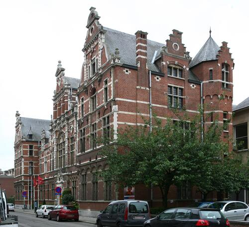

איבון נבז'ן (Yvonne Nèvejean)
אחת המנהיגות המרכזיות בהצלת ילדים יהודים בבלגיה הכבושה. שיתפה פעולה עם ה-CDJ להשמת אלפי ילדים בבתי יתומים עירוניים ופרטיים, משפחות אומנה ומנזרים. הוכרה כחסידת אומות העולם.
מוסדות ששימשו מקלט לילדים יהודים באנטוורפן במהלך השואה.

בעקבות הגירושים והמעצרים ההמוניים של משפחות יהודיות באנטוורפן בקיץ 1942, מאות ילדים יהודים נותרו ללא הורים או אפוטרופוסים. לאחר מעצרים אלו, חלק מהילדים הועברו לבתי יתומים עירוניים, בתי ילדים, או מוסדות פרטיים לא-יהודיים, בעוד שאחרים נאספו על ידי מטפלים ומחנכים אמיצים.
למרות הסיכונים הקיצוניים תחת הכיבוש הצבאי הגרמני, מנהלים, אחיות ורשתות הצלה שונות ניסו להגן ולהסתיר את הילדים הללו. עם זאת, המוסדות העירוניים נותרו תחת פיקוח הדוק. ב-21 בספטמבר 1942, הממשל הצבאי הגרמני ביצע פשיטה שיטתית על בתי היתומים העירוניים באנטוורפן, שהובילה למעצרם ולגירושם של עשרות ילדים יהודים דרך מחנה המעבר מכלן (קסרן דוסאן) לאושוויץ-בירקנאו.
דף זה מתעד את התפקיד ההיסטורי של בתי היתומים הללו, את גורלם של הילדים שעברו בהם, ואת אנשי הצוות והמצילים שסיכנו את חייהם כדי להגן עליהם.

בית הבנות (Meisjeshuis) באנטוורפן היה בית יתומים עירוני שהפך למקלט חיוני לבנות יהודיות שהוריהן נעצרו וגורשו במהלך קיץ 1942.
תפקיד בתקופת השואה: הבית סיפק מקלט תחת איום מתמיד של בדיקות ופשיטות. מטפלים ואנשי צוות שגילו אהדה ניסו להגן על הילדים על ידי עיכוב הרישום הרשמי והסתרת בנות בודדות ככל האפשר.
גורל: ב-21 בספטמבר 1942 ביצעו כוחות הכיבוש הגרמניים פשיטה שיטתית על בתי היתומים העירוניים. הבנות היהודיות נעצרו, נשלחו למחנה המעבר מכלן (קסרן דוסאן), וגורשו לאחר מכן לאושוויץ-בירקנאו. מעטות מאוד שרדו.

בית הבנים (Jongenshuis) היה בית היתומים העירוני ההיסטורי לבנים באנטוורפן, אשר תפקד כמקלט זמני לבנים יהודים בשיא מעצרי הגירוש האנטי-יהודיים.
תפקיד בתקופת השואה: שיכן ותמך בבנים שנותרו ללא הורים. חברי צוות עירוני ואזרחים ניסו לשתף פעולה עם רשתות התנגדות מחתרתיות, במטרה לזייף מסמכים או לעכב את הרישום הרשמי לפני בדיקות פיקוח.
גורל: המוסד היווה מטרה במהלך הפשיטה הטראגית של 21 בספטמבר 1942. כמעט כל הבנים היהודים ששהו במוסד נעצרו, נלקחו למחנה המעבר מכלן, וגורשו למחנות הריכוז.

קרן פנסילבניה תפקדה כמעון יום ומקלט לילדים באנטוורפן, וסיפקה מזון, טיפול רפואי ומחסה לתינוקות וילדים קטנים ממשפחות נרדפות.
תפקיד בתקופת השואה: בשיתוף פעולה עם הוועד היהודי להגנת היהודים (CDJ) המחתרתי, המעון שימש כצומת מעבר מרכזי להברחת ילדים אל מחוץ לעיר והשמתם אצל משפחות אומנה קתוליות באזורים כפריים תחת זהויות בדויות.
גורל: בעוד שילדים רבים ניצלו בהצלחה באמצעות השמתם במסתור, אחרים נתפסו במהלך פשיטות ובדיקות פתע עוקבות.
בית היתומים היהודי ברחוב לנגה לימסטראט היה בית היתומים הראשי שפעל לפני המלחמה בניהול ישיר של הקהילה היהודית באנטוורפן, וטיפל ביתומים יהודים וילדים נזקקים.
תפקיד בתקופת השואה: בימיו הראשונים של הכיבוש, המשיך לפעול תחת הגבלות קיצוניות. ככל שהצעדים האנטי-יהודיים החמירו, פיזרו מנהיגי הקהילה את הילדים לבתים פרטיים או הבריחו אותם אל מחוץ לעיר.
גורל: הפעילות נפסקה כאשר הילדים נאלצו לרדת למסתור או נעצרו בפעולות נפרדות. המבנה נתפס וננעל לבסוף על ידי שלטונות הכיבוש.
הערה: מקרה מבחן זה נכלל בשל חשיבותו ההיסטורית העצומה לרשתות הצלת ילדים יהודים בבלגיה הכבושה.

הרב יונה טיפנברונר ניהל בית ילדים יהודי בבריסל (הידוע בשם Home de la Glacière) שהפך לאחת מרשתות בתי היתומים היהודיים המרכזיות בבלגיה הכבושה במהלך המלחמה.
בין השנים 1942 ל-1944, בתנאי מלחמה קשים ביותר, הרב טיפנברונר וצוותו טיפלו במאות ילדים יהודים. הוא שמר על סביבה חמה ומגוננת תחת איום מתמיד של פשיטות, ופעל בחשאי עם ארגוני מחתרת להסתרת ילדים.
הבית הצליח להישאר פתוח לאורך כל תקופת הכיבוש, ושימש מקלט ליתומים ולילדים שהוריהם גורשו. לאחר השחרור הוא המשיך לפעול כבית יתומים לילדי ניצולים עד שנת 1960.
אישים שניסו להגן ולהציל ילדים במהלך השנים הקשות.
אחת המנהיגות המרכזיות בהצלת ילדים יהודים בבלגיה הכבושה. שיתפה פעולה עם ה-CDJ להשמת אלפי ילדים בבתי יתומים עירוניים ופרטיים, משפחות אומנה ומנזרים. הוכרה כחסידת אומות העולם.
ניהל את בית הילדים היהודי בבריסל, ושיכן מאות ילדים. הוא שמר על חינוך יהודי וחיי קהילה במהלך הכיבוש תחת לחץ כבד ומחסור במזון.
אחות בבית הבנות באנטוורפן שפעלה בחשאי עם רשתות מחתרת. היא סייעה להזהיר משפחות לפני הפשיטה של ספטמבר 1942, ובכך איפשרה למספר ילדים להימלט.